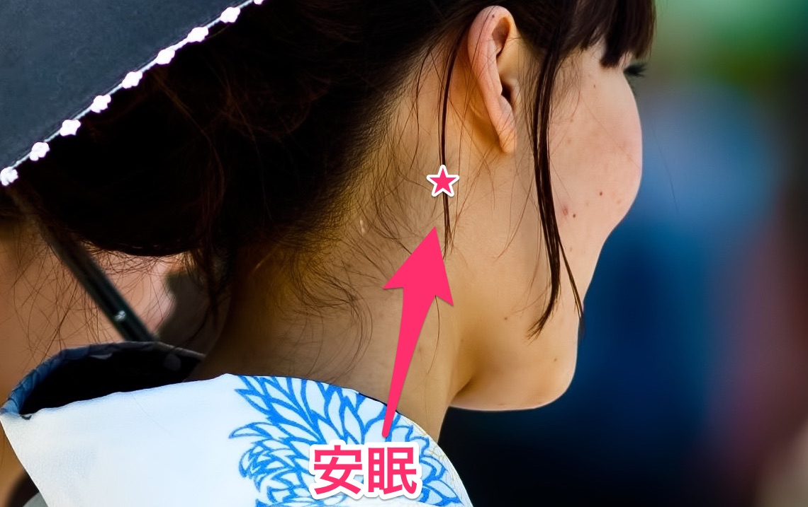

寝る前にリラックスを
寝る前にリラックスすることで、興奮状態や覚醒した状態を静め深い眠りにつけるようになります。
寝る前1時間は何もしないでリラックスすることが重要です。
そのリラクゼーション法について簡単なものをいくつかご紹介します。
お風呂
睡眠と睡眠の質、そして体温の変化は密接に関係しているため、就寝前30分～6時間前の入浴による体温変化は、眠りの促進や深い眠りの増加と言った睡眠の改善効果を持つことがわかっています。
眠る前には人の体温は必ず低下します。
そのために寝る前に身体を温かくしておくと、体温低下がおきやすく眠くなります。
夜から就寝前にかけて、40℃程度の適度なお湯で入浴すると、精神的なリラックス効果に加えて、お湯に浸かって軽く体温を上げることで末梢神経が拡張します。
末梢神経が拡張することでその後の放熱が活発になり、入眠を促進します。
そして寝付いた後、90分前後における深い睡眠を増加させることにつながると考えられています。
香りにもリラックス効果のあるものがありますので、入浴剤を使用するのも良いと考えられます。
ただし、寝る直前に42℃以上の高温のお風呂に入ると、体温を上昇させすぎ交感神経が優位になってしまいます。
この状態ですと心身を目覚めさせてしまうため、かえって入眠が妨げられてしまいます。
また温度は関係なく、寝る前のシャワーは肌を刺激しこちらも交感神経を優位にしてしまうため、寝る前のシャワーは避けた方が無難です。
また意外なことですが、寝る前の歯磨きも安眠を妨げてしまいます。
歯ブラシが歯茎を刺激することで、サーカディアン・リズムを司るメラトニン、の分泌を抑制してしまうからです。
寝る前の食事も脳を覚醒させてしまいますので、歯磨きは寝る前の1時間前くらいに済ませ、その後は何も食べずに寝るのが安眠には一番です。
マッサージやストレッチ
寝る前のマッサージやストレッチも、深い眠りと関係しています。
マッサージやストレッチを行なうことでリラックス効果が期待できるのと、血行を良くすることで体温の上昇が起こります。
体温の変化は睡眠には不可欠なので、寝る前のマッサージやストレッチは身体をリラックスさせ入眠を誘うには良い方法です。
お勧めの寝る前のマッサージは、ふくらはぎのリンパマッサージです。
マッサージ方法
やり方は、くるぶしの下のくぼみを親指と人差し指でつまみアキレス腱に沿って上にスライドしてほぐします。
これを5回行います。
その後で、足首からひざ裏まで、左右の手を交互に使いさすり上げるマッサージを15秒ほど行ないます。
手のひら全体を肌につけてマッサージしてください。
指先に力を入れるとよくないですが、マッサージしている間に指先は肌から離れやすいので、意識して手のひら全体でマッサージするようにしてください。
このマッサージは、リンパの流れを良くし、身体の老廃物を出す効果があります。
またむくみや冷え性の改善にも効果があるので、長時間デスクワークをする方にお勧めのマッサージです。
睡眠を促すツボ
睡眠を促すツボもあります。
ツボとは、経穴とよばれる、中国の医学に由来する、重要な神経・血管・筋走行上といった気と血のエネルギーの通り道とよばれる経路上にあります。
この経穴は、経路が合流したり分岐したりする重要なところであって、WHOもその治療効果を認めています。
睡眠と関係するツボは安眠と呼ばれるツボです。
ツボの場所は耳の後ろ側にあり、骨の出っ張りの下のくぼみから1～1.5cmほど顔側のところにあります。
頭の後ろから反対側の手をまわし、中指で安眠を押さえ、首を左右にゆっくり動かしてツボを刺激します。
これを10～20秒、5～10回ほど押すのが効果的です。

また、ツボについては「眠れない時に試したい！すぐに眠れる5つの方法」も参考にしてみてください。